Awesome Native macOS Apps
A community-curated list of macOS apps built with native technologies (Swift, SwiftUI, AppKit) that are fast, efficient, and respect your Mac's resources — no Electron bloat, just native performance.
Maintained by MacNative.io, a curated directory of quality Mac apps where you can browse screenshots, pricing, and full app details for everything listed here.
Contents
Getting Started
Categories
- Analytics & Monitoring
- Audio & Music
- Backup & Sync
- Browsers & Web
- Calendar & Time
- Clipboard Managers
- Color Pickers
- Database Tools
- Design Tools
- Developer Tools
- Email & Communication
- Finance
- File Management
- Git & Version Control
- Image & Graphics
- Markdown Editors
- Menu Bar Apps
- Network Tools
- Note-Taking & Writing
- Password Managers
- PDF Tools
- Productivity
- Screenshot & Recording
- Security & Privacy
- System Utilities
- Terminal & Shell
- Text Editors
- Video & Media
- Wallpaper Apps
- Window Management
Resources
What Makes an App "Native"?
Apps on this list are:
- ✅ Built with native macOS frameworks (Swift, SwiftUI, AppKit, Objective-C)
- ✅ Lightweight and resource-efficient
- ✅ Follow Apple's Human Interface Guidelines
- ✅ Feel fast and responsive
- ❌ NOT Electron or web-wrapper apps
- ❌ NOT resource-heavy cross-platform apps
🚀 New to Mac? Start Here
Not sure where to begin? These 6 apps are the most universally useful — install them first and thank yourself later.
| App | Why it's essential |
|---|---|
| Rectangle | Snap windows into place with keyboard shortcuts. You'll use this every single day. |
| Maccy | Clipboard history that just works. Never lose a copied item again. |
| IINA | Plays any video format natively. Makes QuickTime feel like a toy. |
| AppCleaner | Uninstall apps properly — removes all leftover files, not just the .app. |
| iTerm2 | The terminal macOS should have shipped with. Tabs, split panes, search, and more. |
| Raycast | Supercharged Spotlight replacement. Launch apps, manage clipboard, run scripts, and more — all from one keystroke. |
🔍 Electron App Detector
A fun, visually appealing script to detect Electron-based applications on your Mac.
Quick Start
One-line install and run:
curl -sL https://raw.githubusercontent.com/open-saas-directory/awesome-native-macosx-apps/main/find-electron-apps-macos.sh | bash
What It Does
- 🔎 Scans
/Applicationsfolder for Electron apps - ⚡ Identifies apps built with Electron framework
- 📊 Shows app names, sizes, and versions
- 🎨 Beautiful, colorful terminal output
📖 Read more about the detector →
Analytics & Monitoring
| iStat Menus Advanced Mac system monitor in your menu bar. Paid |
|
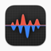 |
Stats macOS system monitor for CPU, GPU, memory, disk, and more. Free Open Source |
| Usage System activity monitor for macOS, iOS, and iPadOS. Freemium |
Audio & Music
| BackgroundMusic macOS audio utility to control volume per-app. Free Open Source |
|
| Cog Audio player for macOS with broad format support. Free Open Source |
|
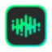 |
eqMac System-wide audio equalizer for macOS. Free Open Source |
| IINA Modern video player with native macOS design. Free Open Source |
|
| Muxie Last.fm scrobbler for Apple Music, Spotify Desktop, iPod Classic, Rockbox devices and some others. Free |
|
| Petrichor Offline music player with support for over 20 file formats and a lot of other features. Free Open Source |
|
| Roam FM Roam the world through global radio. Freemium |
|
| Sleeve Beautiful now playing display for Apple Music. Paid |
|
| SoundSource Superior sound control for macOS. Paid |
Backup & Sync
| Arq Backup your files to cloud storage. Paid |
|
| Carbon Copy Cloner Reliable Mac backup and cloning solution. Paid |
Browsers & Web
| Orion Lightweight WebKit browser with zero telemetry. Free |
|
| Zen Browser Privacy-focused, customizable browser built on Firefox. Free Open Source |
Calendar & Time
| Fantastical Calendar app with natural language input. Subscription |
|
| Itsycal Tiny menu bar calendar. Free Open Source |
|
| Meeting Bar Menu bar app for your calendar meetings. Free Open Source |
Clipboard Managers
| Maccy Lightweight clipboard manager with search. Free Open Source |
|
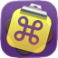 |
CopyClip Lightweight clipboard history manager. Free |
| Paste Beautiful clipboard manager with cloud sync. Subscription |
|
| Pesty Native clipboard manager with pinboards and keyboard-driven pasting. Free Open Source |
|
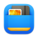 |
Unclutter Files, notes, and clipboard manager in one. Paid |
Color Pickers
| ColorSlurp Best color picker and organizer for macOS. Freemium |
|
| Pika Beautiful color picker for macOS. Free Open Source |
|
| Sip Collect, organize and share colors. Paid |
Database Tools
| Postico Modern PostgreSQL client for macOS. Paid EU |
|
| TablePlus Modern native database management tool. Freemium |
|
| TablePro Native database client for MySQL, PostgreSQL, SQLite, MongoDB, Redis, and more. Free Open Source |
Design Tools
| IconJar Icon management tool for designers. Paid |
|
| Sketch Professional digital design for Mac. Subscription EU |
|
| xScope Measure, inspect, and test on-screen graphics. Paid |
Developer Tools
Browse developer tools on MacNative →
| BucketMate Native S3 GUI Client for macOS Freemium |
|
| CodeEdit Native code editor for macOS. Free Open Source |
|
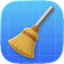 |
DevCleaner Clean Xcode cache and derived data. Free Open Source |
| DevUtils All-in-one offline toolbox for developers (42+ tools). Freemium |
|
| Paw Advanced API tool for Mac. Paid |
|
| Proxyman Native HTTP debugging proxy. Freemium |
|
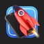 |
RocketSim Enhance Xcode Simulator productivity. Freemium |
| Rockxy macOS HTTP/HTTPS debugging proxy to capture, inspect, modify, and replay traffic. Freemium Open Source |
|
| SnipperApp 3 Code snippet manager with iCloud and Gist sync, and a bundled MCP server. Paid (one-time) |
|
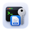 |
SSH Keys Manager Native macOS app for managing SSH keys and SSH config entries. Free Open Source |
| SF Symbols Browse and export Apple's SF Symbols. Free |
|
| Vibedock Manage Claude Code MCP servers from your macOS menu bar. Paid (one-time) |
Email & Communication
| Airmail Lightning fast mail client for Mac. Paid EU |
|
| MailMate Advanced IMAP email client with keyboard control. Paid |
|
| Mimestream Native Gmail client for macOS. Paid |
Finance
Browse money & finance apps on MacNative →
| Chronicle Bill organizer and payment tracker. Paid |
|
| Copilot Personal finance and budgeting app with automatic transaction syncing. Subscription |
|
| Soulver Smart notepad calculator that understands plain English math. Paid EU |
|
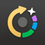 |
Subscription Day Track your paid subscriptions and analyze spending statistics. Freemium |
File Management
| Commander One Dual-pane file manager for macOS. Freemium |
|
| ForkLift Advanced dual-pane file manager and FTP client. Paid |
|
| Hazel Automated organization for your Mac. Paid |
|
| NameQuick AI-powered file renaming using GPT, Gemini, or local LLMs. Paid |
|
| Path Finder Powerful Finder alternative. Paid |
|
| Quick Look plugins Useful Quick Look plugins for developers. Free Open Source |
|
| Encrypto Encrypt files with AES-256 encryption. Free |
Git & Version Control
| Fork Fast and friendly Git client for Mac. Free |
|
| GitFox Git client with a focus on simplicity. Paid |
|
| GitUp Git interface you've been missing. Free Open Source |
|
| SourceTree Free Git client from Atlassian. Free |
|
| Tower Powerful Git client for Mac. Paid EU |
Image & Graphics
Browse photo & video apps on MacNative →
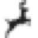 |
Acorn Full-featured photo editor designed for humans. Paid |
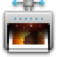 |
ImageOptim Compress images without losing quality. Free Open Source |
| Pixave Ultimate image organizer and viewer. Paid |
|
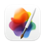 |
Pixelmator Pro Powerful native image editor. Paid EU |
| Retrobatch Batch image processing for Mac. Paid |
|
| xScope Measure, inspect and test on-screen graphics. Paid |
Markdown Editors
| Glance Native Markdown viewer and Quick Look extension. Free |
|
| iA Writer Focused writing app with beautiful typography. Paid |
|
| MacDown Open source Markdown editor for macOS. Free Open Source |
|
| Marked 2 Markdown preview and conversion. Paid |
|
| MD Preview Lightweight Markdown preview app using Rust and native WebView. Free Open Source |
|
| MWeb Pro Markdown writing and note-taking. Paid |
|
| Nice.md Markdown viewer with Quick Look preview, outline sidebar, and optional edit mode. Freemium EU |
|
| Typora Minimal Markdown editor and reader. Paid |
|
| Writer Local-first markdown editor with a Rust backend and native WKWebView. Free Open Source |
Menu Bar Apps
| Bartender Organize your menu bar icons. Paid |
|
| Commitments Your tasks in menu bar. Paid |
|
| DatWeatherDoe Simple menu bar weather app. Free Open Source |
|
| Dozer Hide menu bar icons to give your Mac a cleaner look. Free Open Source |
|
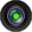 |
Hand Mirror One-click camera check from menu bar. Free |
| Headroom Live Claude Code session (5h) and weekly (7d) usage in your menu bar — zero network calls, reads what Claude Code already writes locally. Free Open Source |
|
| Hidden Bar Hide menu bar items. Free Open Source |
|
| Holeberry Monitor and control your Pi-hole instances from the menu bar. Free Open Source |
|
| HomeBar for Homey Pro Manage your Homey Pro smart home. Freemium |
|
| Itsycal Tiny menu bar calendar. Free Open Source |
|
| Itsyhome Smart home meets menu bar. Freemium Open Source |
|
| MenubarX Browser in your menu bar. Freemium |
|
| One Thing Put a single task in your menu bar. Paid |
|
 |
OpenQuack Transcribes a 5-minute clip in 2.8 s — local WhisperKit dictation, noise-robust. ~8 MB native Swift. Free Open Source |
| SaneBar Privacy-first menu bar manager. Hide and organize icons. Freemium |
|
| Stargazer Bar Track one public GitHub repo's stars and release downloads from your menu bar. Free Open Source |
|
| Thaw Powerful menu bar management tool. Fork of Ice, lower resource usage. Free Open Source |
|
| TickerPad Real-time crypto prices in your macOS menu bar. Freemium |
|
| Tomatino Pomodoro timer that switches your Focus mode and your music with each session. Paid |
|
| TranslateAir AI translation and OCR from the menu bar, 100+ languages. Freemium |
Network Tools
| Holeberry Monitor and control your Pi-hole instances from the menu bar. Free Open Source |
|
| Little Snitch Network monitor and firewall. Paid EU |
|
| Micro Snitch Monitor camera and microphone access. Paid EU |
|
| NetNewsWire RSS reader for macOS. Free Open Source |
|
| Surge Advanced network toolbox for Mac. Paid |
|
| Tracexy Native macOS packet analyzer for live and saved PCAP/PCAPNG captures. Free Open Source |
|
| WiFi Explorer Scan, monitor and troubleshoot wireless networks. Paid |
Note-Taking & Writing
Browse writing & documents apps on MacNative →
| Bear Beautiful, flexible writing app. Freemium EU |
|
| Craft Native document editor with sharing. Freemium |
|
| DEVONthink Document and information management. Paid |
|
| Knopo Local-first Markdown outliner with backlinks and queries. Free Open Source |
|
| FSNotes Modern notes manager for macOS. Free Open Source |
|
| iA Writer Focused writing app with beautiful typography. Paid |
|
| Notational Velocity Modeless note-taking application. Free Open Source |
|
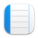 |
Notebooks Write, organize, and manage information. Paid |
| nvALT Fork of Notational Velocity with additional features. Free Open Source |
|
| SeqLog Outliner that stores every note as a plain Markdown file, with backlinks and built-in Git. Free |
|
| The Archive Note-taking app for writers and researchers. Paid |
|
| Tot Elegant text collection on menu bar. Freemium |
|
| Ulysses Professional writing environment for Mac. Subscription EU |
Password Managers
| Strongbox Native KeePass client for macOS. Freemium |
PDF Tools
| PDFgear Free PDF editor for macOS. Free |
|
| PDF Expert Fast, robust PDF editor. Paid |
|
| PDFpenPro Professional PDF editing for Mac. Paid |
|
| Skim PDF reader and note-taker. Free Open Source |
Productivity
Browse productivity apps on MacNative →
| Alfred Productivity app for macOS with powerful workflows. Freemium |
|
| BetterTouchTool Customize input devices on your Mac. Paid EU |
|
| Blurt Hold-a-hotkey dictation that pastes cleaned-up text into any app, using AssemblyAI cloud speech-to-text. Free Open Source |
|
| Due Reminders with persistent alerts. Paid |
|
| Fantastical Calendar app with natural language input. Subscription |
|
| Focus Block distracting websites and applications. Paid |
|
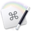 |
Keyboard Maestro Automate applications and websites. Paid |
| OmniFocus Professional-grade task management. Paid |
|
| Raycast Blazingly fast extendable launcher. Freemium |
|
| Revu Local-first spaced repetition app with FSRS scheduling, Anki import, and study guides. Free Open Source |
|
| SelfControl Block distracting websites. Free Open Source |
|
| Snippety Advanced snippets manager for macOS and iOS. Paid |
|
| TaskPaper Plain text to-do lists. Paid |
|
| Things Award-winning task manager. Paid |
|
| Tot Elegant text collection on menu bar. Freemium |
|
| Speakmac Offline hotkey dictation for macOS that types into any app using on-device transcription. One-Time Subscription |
Screenshot & Recording
| BetterCapture A lightweight, and intuitive screen recorder with a native look and feel. Free Open Source |
|
| CleanShot X Capture your Mac's screen like a pro. Paid |
|
| Gifox Delightful GIF recording and sharing. Paid |
|
| Kap Open-source screen recorder. Free Open Source |
|
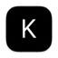 |
Keyty Visualize keyboard and mouse actions for demos and recordings. Free Open Source |
| ScreenFloat Screenshot utility with floating thumbnails. Paid EU |
|
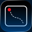 |
ScreenKite Screen recording and video editing with auto zoom effect. 4x faster than Screen Studio. Free |
| Shottr Screenshot tool with advanced features. Free |
|
| Xnapper Take beautiful screenshots instantly. Freemium |
Security & Privacy
Browse security & privacy apps on MacNative →
| Cryptomator Multi-platform client-side encryption. Free Open Source EU |
|
| KnockKnock See what's persistently installed on your Mac. Free Open Source |
|
| Little Snitch Network monitor and firewall. Paid EU |
|
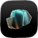 |
Lockpaw Lock the screen while background tasks, builds, and AI agents keep running. Free Open Source |
| Lulu Open-source firewall for macOS. Free Open Source |
|
| Micro Snitch Monitor camera and microphone access. Paid EU |
|
| OverSight Monitor mic and webcam access. Free Open Source |
|
| Shieldxy Native macOS application firewall for monitoring and controlling outbound connections by app. Free Open Source |
System Utilities
Browse utilities on MacNative →
| AlDente Charge limiter to extend MacBook battery life. Freemium Open Source |
|
| AppCleaner Thoroughly uninstall unwanted apps. Free |
|
| Background Music Control audio per-application. Free Open Source |
|
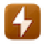 |
coconutBattery Check battery health and status. Free |
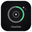 |
ClearDisk macOS menu bar utility that monitors 44+ developer cache paths and helps reclaim disk space. Free Open Source |
| DaisyDisk Analyze disk usage and free up space. Paid |
|
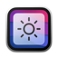 |
MonitorControl Control external monitor brightness & volume like native displays. Free Open Source |
| DisplayBuddy Control the real brightness of monitors directly from Mac. Paid |
|
| Endurance Extend your MacBook's battery life. Paid |
|
| EtreCheck System configuration and diagnostic reporting. Free |
|
| Hand Mirror One-click camera check from menu bar. Free |
|
| iStat Menus Advanced Mac system monitor. Paid |
|
| LinearMouse The mouse and trackpad utility for Mac. Free Open Source |
|
| Lungo Prevent your Mac from going to sleep. Paid |
|
| Mole Clean caches, manage apps, analyze disk space, and monitor system status. Paid |
|
| Onyx Multifunction utility for macOS. Free EU |
|
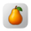 |
Pearcleaner Powerful Mac app cleaner Free Open Source |
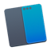 |
Rectangle Window management with keyboard shortcuts. Free Open Source |
| Stats macOS system monitor. Free Open Source |
|
| The Unarchiver Extract many archive formats. Free |
Terminal & Shell
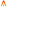 |
Alacritty GPU-accelerated terminal emulator. Free Open Source |
| iTerm2 Terminal emulator for macOS. Free Open Source |
|
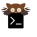 |
Kitty Fast, feature-rich GPU-based terminal. Free Open Source |
| Terminal Built-in macOS terminal. Free |
|
| Warp Rust-based terminal with modern features. Free |
Text Editors
| BBEdit Professional text and code editor. Paid |
|
| CodeEdit Native code editor for macOS. Free Open Source |
|
| CotEditor Lightweight plain-text editor. Free Open Source |
|
| Itsypad A tiny, fast scratchpad and clipboard manager. Free Open Source |
|
| MacVim Vim text editor for macOS. Free Open Source |
|
| Neon Vision Editor A lightweight and modern macOS code editor. Free Open Source |
|
| Nova Beautiful native code editor from Panic. Paid |
|
| SubEthaEdit Code, write, and edit with collaborative features. Free Open Source |
|
| TextMate Powerful text editor for macOS. Free Open Source |
|
| VimR Neovim GUI for macOS. Free Open Source |
Video & Media
Browse photo & video apps on MacNative →
| HandBrake Open source video transcoder. Free Open Source |
|
| IINA Modern media player for macOS. Free Open Source |
|
| Itsytv The missing Apple TV remote app. Free Open Source |
|
| Movist Pro Powerful movie player for macOS. Paid |
|
| Permute Easy-to-use media converter. Paid |
|
| QuickTime Player Built-in media player for macOS. Free |
|
| Subler Mux and tag MP4 files. Free Open Source |
|
| VLC Cross-platform multimedia player. Free Open Source EU |
Wallpaper Apps
| Backspace Provides 1,000+ 4K live wallpapers for the desktop and Lock Screen. Paid |
|
| Wallspace Live Wallpapers for Macos, with custom lock screen. Freemium |
Window Management
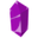 |
Amethyst Automatic tiling window manager. Free Open Source |
| BetterSnapTool Window management via snap areas. Paid EU |
|
| Divvy Window management at its finest. Paid |
|
| Loop Window management made elegant. Free Open Source |
|
| Magnet Window manager that snaps windows into position. Paid |
|
| Moom Move and zoom windows with ease. Paid |
|
| Nudge Free window manager with keyboard shortcuts and drag-to-edge snapping. Free Open Source |
|
| Rectangle Window snapping via keyboard shortcuts. Free Open Source |
|
| Rectangle Pro Professional window management. Paid |
|
| Swish Control windows with trackpad gestures. Paid |
|
| Wins Bring system-level window management features to macOS. Paid |
|
| Yabai Tiling window manager for macOS. Free Open Source |
📬 Get Monthly Native App Picks in Your Inbox
Subscribe to our newsletter and get 5-10 handpicked native macOS apps delivered monthly.
What you'll get:
- 🎯 Curated native apps (no Electron bloat)
- 💎 Hidden gems you won't find elsewhere
- 🆓 Free & open-source alternatives
- 📊 App comparisons & recommendations
- 🔧 Tips for getting the most out of your Mac
📖 Subscribe to the Newsletter →
Join early subscribers and never miss a great native Mac app again. Unsubscribe anytime.
Contributing
We welcome contributions! Please read our Contributing Guidelines before submitting.
How to Contribute
- Fork this repository
- Add your app to the appropriate category's table, in alphabetical order, following the two-column gallery format described in CONTRIBUTING.md
- Verify the app is truly native (Swift/SwiftUI/AppKit)
- Create a Pull Request
App Requirements
Apps must meet ALL these criteria:
- ✅ Built with native macOS technologies
- ✅ Lightweight and performant
- ✅ Actively maintained (updated within the last 2 years)
- ✅ Available for download
- ✅ No malware/spyware
What NOT to Include
- ❌ Electron apps
- ❌ Web wrappers
- ❌ Abandoned projects (no updates in 2+ years)
- ❌ Apps with malware/suspicious behavior
- ❌ Cross-platform apps with poor macOS integration
Get Your App Spotlighted on X
Beyond adding your app to this list, you can send it to us on X (@NativeMacApps) for a chance at an individual spotlight post with a screenshot and writeup. Follow the account to catch new spotlights.
Star History
License

To the extent possible under law, the contributors have waived all copyright and related rights to this work.
💡 Found a great native macOS app? Submit it here!
⭐ If you find this list useful, please star the repo to help others discover it!
Reach thousands of Mac power users by sponsoring this list. Contact us at sponsor@opensaas.directory